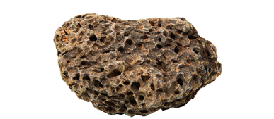
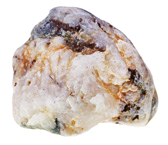
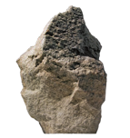

Preguntas sobre las rocas
- Investiga cuál es la distribución de las rocas sedimentarias, metamórficas e ígneas en Andalucía y realiza en tu cuaderno un mapa litológico de esta comunidad autónoma. Indica si existe alguna relación entre esta distribución de las rocas y el relieve andaluz.
- ¿Cuál es el criterio más utilizado para clasificar las rocas? Define cada modalidad atendiendo a ese criterio.
- En pareja y en grupos pequeños, realiza una presentación usando un programa informático sobre la clasificación de las rocas indicado en ella, al menos: el criterio de clasificación, los tipos, las características de cada tipo y varios ejemplos. No olvides hacer referencia a las fuentes consultadas.
- Indica las semejanzas y las diferencias entre las rocas detríticas y no detríticas.
- Explica cómo se ha originado esta roca.
- ¿En qué lugares de la corteza terrestre se forman los tres tipos de rocas magmáticas?
- La pumita es una roca volcánica que flota en el agua. ¿A qué crees que se debe este hecho?

- Observa las siguientes rocas magmáticas y ordénalas teniendo en cuenta el tiempo que han tardado en formarse a partir del enfriamiento del magma que las ha originado.


- Explica las diferencias entre el proceso de formación de una roca metamórfica y el de una roca magmática.
Materiales
- Una colección de rocas.
- Un portabobjetos (de vidrio) y un ácido.
Actividad
- Investiga cuál es la litificación.
- Investiga qué es la diagenesis. Define el proceso y describe brevemente cuáles son los cambios fisicoquímicos en las que se produce la diagenesis.
- Las relaciones que existen entre las rocas sedimentarias, metamórficas e ígneas constituyen el ciclo geológico. Investiga qué procesos conducen a la transformación de unas rocas en otras y realiza un esquema representando el ciclo geológico.
- Investiga sobre el coltán y elabora una presentación que siga este guion:
- a. ¿Qué es el coltán?
- b. ¿Para qué se utiliza?
- c. ¿En qué lugares se localizan los principales yacimientos de coltán?
- d. ¿En qué condiciones laborales se realiza su explotación?
- e. ¿Cómo se puede actuar frente a esta situación?
- f. Cita las fuentes consultadas.